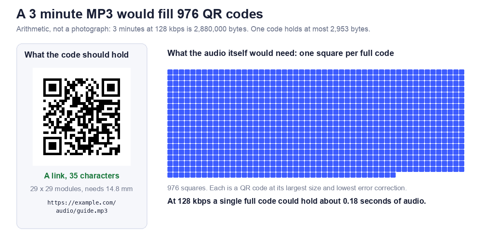

The short answer
You cannot put the MP3 inside the code
A QR code is a small grid of squares that holds text. The biggest one can hold 2,953 bytes. Even a short clip of audio is far larger than that.
Put a link to the file instead
Upload the MP3 somewhere that gives it a public web address, then make a QR code of that address. Scanning the code opens the link, and the phone plays or offers the file from there. The steps are below.
Why an MP3 does not fit
The arithmetic
The size of an audio file in bytes is the bitrate in kilobits per second, times 1,000, divided by 8, times the length in seconds. The largest QR code (version 40, 177 by 177 squares) holds 2,953 bytes at the lowest error correction level, and 2,331 bytes at the medium level. Here is how many full codes some common clips would need at the lowest level.
| Clip | Size in bytes | Full codes needed |
|---|---|---|
| 10 seconds at 32 kbps | 40,000 | 14 |
| 30 seconds at 64 kbps | 240,000 | 82 |
| 3 minutes at 64 kbps | 1,440,000 | 488 |
| 3 minutes at 128 kbps | 2,880,000 | 976 |
| 3 minutes at 192 kbps | 4,320,000 | 1,463 |
These are calculated figures, not measurements of a particular file, and they ignore the small extra data in an MP3 file.
How much audio one code could hold
Working the same sum backwards, 2,953 bytes is about 0.74 seconds at 32 kbps, 0.37 seconds at 64 kbps, and 0.18 seconds at 128 kbps. That is less than a syllable. The picture below shows a 3 minute clip at 128 kbps as 976 squares, each one a full QR code, next to the single code that holds the link.

How to make a QR code for an audio file
Step 1: Host the file
The MP3 has to live at a public web address. Your own website works. So does a file sharing service, as long as the link is set so that anyone with it can open the file. If a person has to sign in or ask for access, the code will fail for them.
Step 2: Copy the direct link
Prefer an address that ends in .mp3. Some sharing links open a preview page rather than the file. With Dropbox, a link ending in ?dl=0 opens a preview page, and changing it to ?dl=1 asks for the file itself. Our file tool can make that change for you. For Google Drive, see our Google Drive guide.
Step 3: Make the code
Open the file and media QR code generator, paste the link and download the code. When it recognised an audio link, our tool said: "Recognised an audio file. Audio plays in the browser. This works well for short clips on labels and markers."
Step 4: Test it
Test in a private browser window, so you are not signed in to anything, and then scan the printed code with a phone that is not yours. If you can open the audio, a stranger probably can too. Check the printed size with our guide to QR code size for print.
What we tested
Three kinds of link in our file tool
We pasted three links into the live tool, then decoded each code to confirm it held exactly what we typed. The print size is the minimum width at 0.4 mm per square plus a margin of 8 squares on each side.
| Link | Characters | Grid | Minimum print width |
|---|---|---|---|
| Plain link ending in .mp3 | 35 | 29 x 29 | 14.8 mm |
Dropbox link, dl=1 ticked | 47 | 33 x 33 | 16.4 mm |
| Link to a page about the file | 34 | 29 x 29 | 14.8 mm |
What we saw
The plain .mp3 link was encoded unchanged. The Dropbox link stayed at dl=0 until we ticked the checkbox, then became dl=1. The page link got this note: "No file extension recognised, so this may be a page about the file rather than the file itself. Open it and check." We did not test how every phone or browser handles the audio once the link opens, so try yours.
Link to the file or to a page with a player?
Link straight to the MP3
This is the simplest. There is nothing to build, and the code stays short. The downside is that you leave it to the phone to decide how to present the file.
Link to a page that holds the player
A page lets you add a title, a transcript, a picture and a way to share. It also lets you swap the audio later without reprinting the code, because the printed link stays the same. The cost is that you must keep that page online.
Where audio QR codes work well
Good fits
- A label on a museum object, a plant or a product, with a short spoken note.
- A menu, with a recording of how a dish name is pronounced.
- A language handout, where each line links to its recording.
- A greeting card or a gift, with a recorded message.
Keep clips short
A 3 minute clip at 128 kbps is roughly 2.9 MB. That is fine on a good connection, and slow where signal is weak. Lower the bitrate for speech, and trim the silence.
Mistakes to avoid
Sharing set to private
If the link needs a sign in, the scanner sees a login page, not your audio. Always test in a private window.
Link rot
A static code cannot change. If you move or delete the file, the printed code points to nothing. Read static vs dynamic codes before printing a lot of them.
Printing too small
A longer link means a denser code. Keep the address short, and see how link length changes the size you need. If a code will not read, our guide on why QR codes fail to scan lists the usual causes.
Frequently asked questions
Can a QR code store an MP3?
No. The biggest code holds 2,953 bytes, and even a 10 second clip at 32 kbps is about 40,000 bytes.
How do I make a QR code that plays audio?
Host the MP3 at a public link, paste the link into a QR code generator, and test the printed code.
Does the audio play right after scanning?
Scanning opens the link. What happens next depends on the phone and the browser, and we did not test every combination.
Can I use a link from Google Drive or Dropbox?
Yes, if sharing is set so anyone with the link can open it. Our Google Drive guide covers the Drive settings.
Will the code stop working after a few months?
A static code does not expire by itself, but it only works while the file at the link is still there.
Can I change the audio later?
Only if the link points to something you control, such as a page on your own site where you replace the file. Otherwise you must make and print a new code.